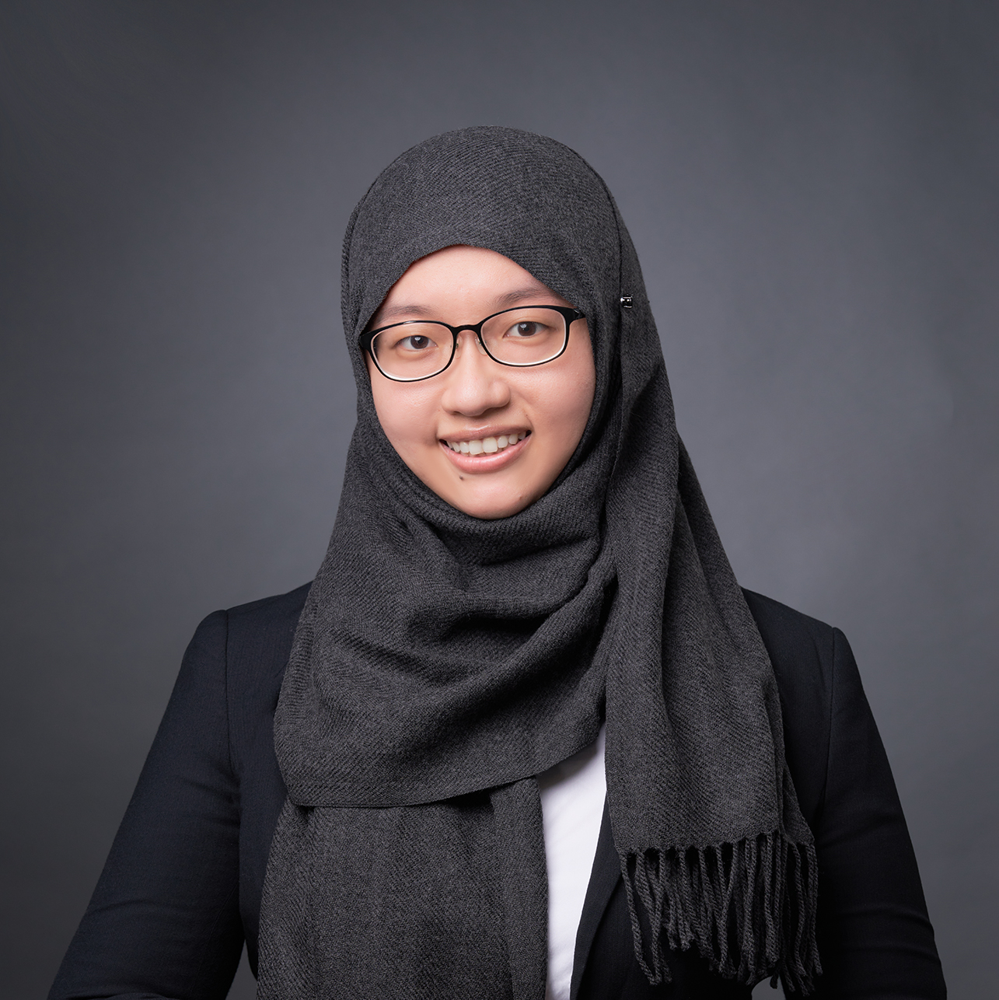
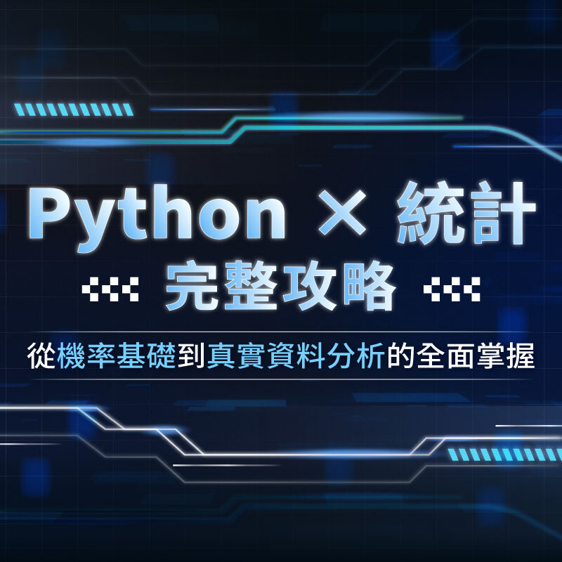
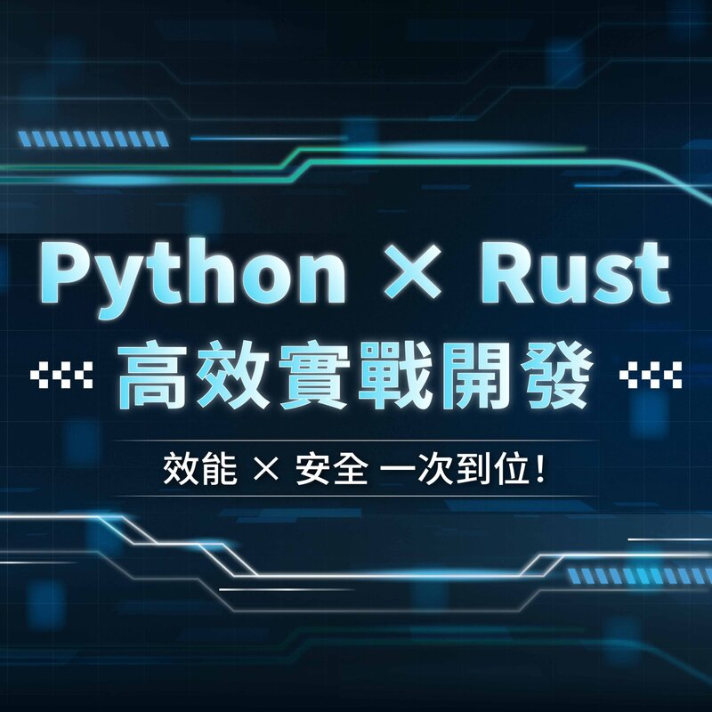
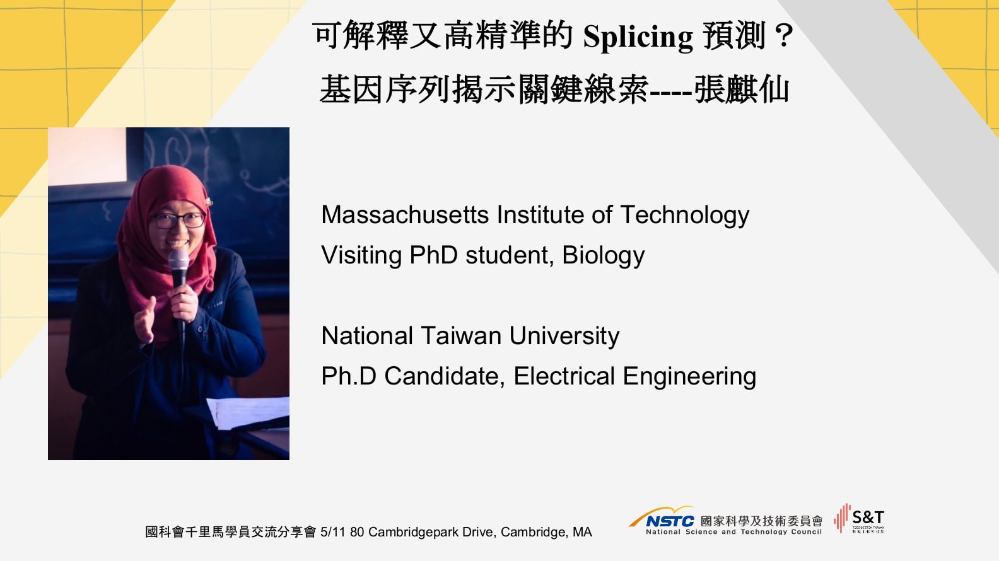
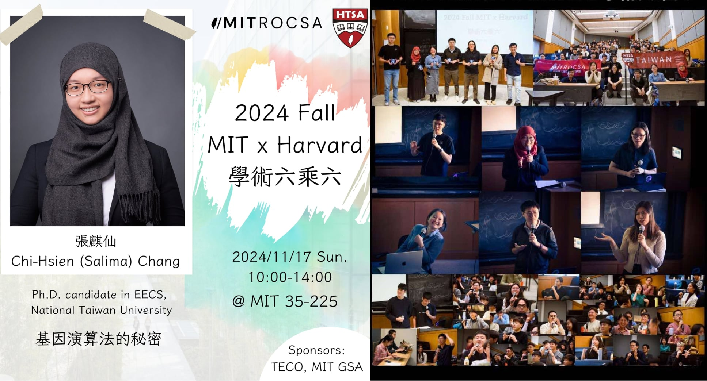
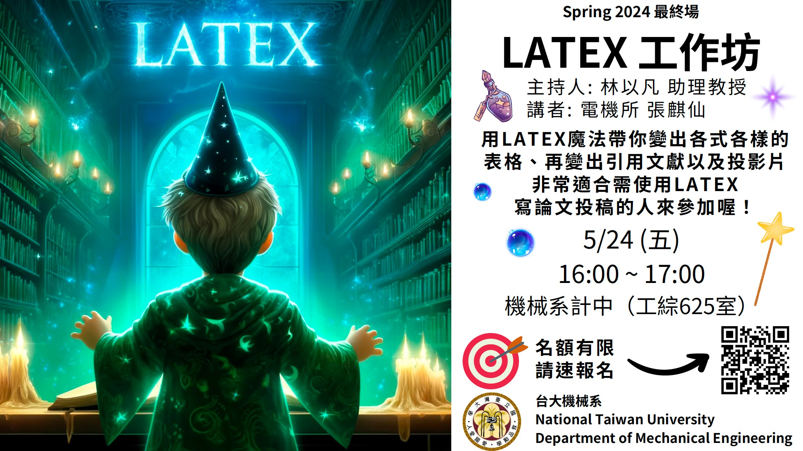
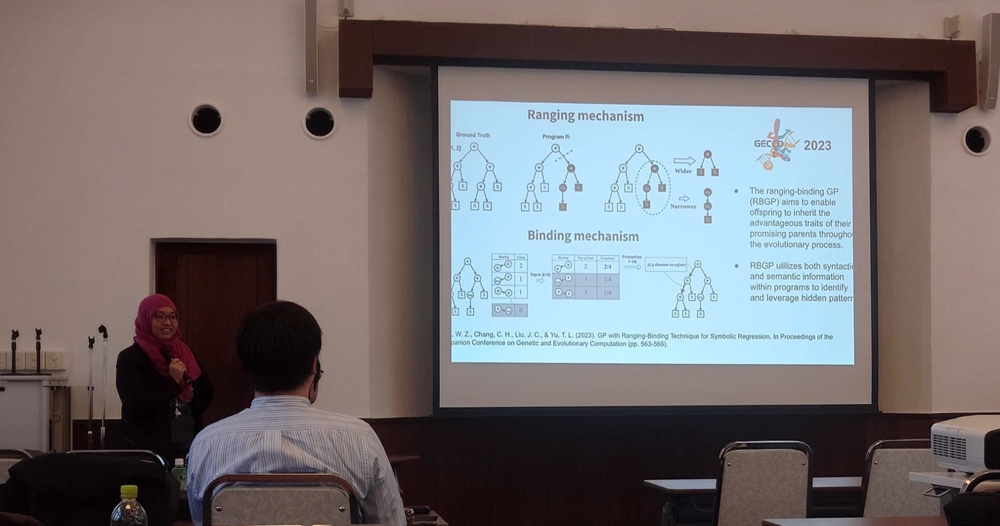

I build AI products and teach 1,000+ learners programming, statistics, and how to work with AI.

Post a screenshot or YouTube demo, link your GitHub repo, and get Cool / Not Cool feedback.
A free, open-source Chrome new-tab extension that surfaces a random video from your YouTube saved lists, plus bookmarks and a to-do list.
Serving as a Reviewer for IEEE Transactions on Evolutionary Computation (TEVC).
Lecturer of Java, Python, Statistics & Data Analysis at NTU CSIE · 2025 Outstanding Lecturer · Statistics & OOP courses rated 5.0/5 · student reviews
I am a PhD candidate at TEILab (Taiwan Evolutionary Intelligence Laboratory), advised by Dr. Tian-Li Yu, in Electrical Engineering at National Taiwan University. Before that, I earned my M.S. in Statistics at NTU and my B.S. in Mathematical Sciences at National Chengchi University.
I currently teach programming, statistics, and data analysis as a lecturer at NTU CSIE, where I received the 2025 Outstanding Lecturer award. I'm always happy to chat about research, teaching, or building with AI. Reach me at .
Built fully interpretable simulators for pre-mRNA splicing.
Shipped a Linkout plugin for JBrowse 2 and an ML model predicting insect images from SNPs.
Teaching Java, Python, statistics, and data analysis. 2025 Outstanding Lecturer.
“She is the best TA I have ever had in my 30 years of teaching career (Computer Programming, Summer College, National Taiwan University, 2022).”
「麒仙是我教授台大通識及全國夏季學院《計算機程式設計》約三十餘年來，最優秀的助教。」
The teacher unblocked everything about statistics for me, and patiently, carefully answered my many questions. After the course I truly felt my mind had been opened: concepts that used to be fuzzy became clear. She explained and clarified many statistical concepts, so I now understand how to apply them at work. She is the best teacher I have ever had. I believe that if every school had a teacher like her, every student would learn statistics solidly and well.
老師把我統計學的任督二脈都打通了，而且非常有耐心、細心地回答了我許多問題。上完課後，我真的覺得腦袋被打開了，很多以前模糊的概念都變得清楚明白！老師在課堂中講解並釐清了許多統計學的概念，讓我更清楚如何將這些知識應用在工作上。這是我從小到大遇過最棒的一位老師。我相信，如果在學校能遇到這樣的老師，每位同學的統計學一定都能學得紮實、學得很好。
Chi-Hsien teaches solidly, is very professional and kind, and is very patient with students from non-technical backgrounds. She keeps track of each student's progress to make sure everyone keeps up. An excellent teacher; I hope she offers more statistics and data analysis courses.
麒仙老師教學扎實，非常專業溫柔，且對於非本科背景的同學也都非常有耐心，會仔細照顧每位同學的學習進度，確認大家都能跟上進度，是一位很優良的老師，期待未來能開更多統計和資料分析相關的課程。
The teacher is dedicated and highly capable. More importantly, she discusses things with students in real time, respects students, and gives us room, so class never feels stiff or dull.
老師非常認真且有實力，更重要的是，會和學生做即時性的交流討論，非常尊重學生，也很給學生空間，上起課來不會有嚴肅沉悶的感覺。
She teaches statistics by pairing theory with real examples. While learning something new, familiar experiments like rolling dice and flipping coins deepen understanding. In the Python part she explains not only basic operations and how the language works, but also ties them back to the statistical theory. As a game-balance designer, many detours I've taken at work were explained by the theory in this course, and I now know what to look for when I get a new dataset. On day two, the Python session showed how convenient programming is as a statistical tool and sparked ideas for applications. My follow-up questions outside class were answered well too. It was worth traveling up from Kaohsiung.
老師在統計的講解採用以理論搭配實際案例的方式來進行，在認識新知識的同時可以以常見的骰子、擲硬幣實驗等例子來加深理解並且在 Python 實作上，除了有說明基礎操作與程式語言的運作原理，也有與學到的統計理論互相呼應，作為遊戲數值設計師，日前常有一些在工作多繞的彎路在這堂課的理論中都有得到驗證，也更知道拿到一筆新數據應該要注意的事情、並抓到重點。在第二日的 Python 課程可以完整地感受到「以程式語言作為統計工具」的方便性及應用發想，課堂外的延伸問題也有很好的得到解答，特地從高雄北上不虛此行。
She focuses on core concepts: only by understanding random variables, the central limit theorem, and how Python packages and programs actually run can you use any statistical tool with confidence. Even for things you haven't learned, a quick search is enough to get started. Her expertise and passion are equally impressive.
老師相當重視核心觀念，只有懂得隨機變數、中央極限定理，以及 Python 套件結構和程式執行的原理，才能從容不迫地運用所有的統計工具，就算沒有學過，當有需要的時候只要稍加查詢即可快速上手。老師的專業和熱情同樣令人印象深刻。
In a short time she explained the most essential principles of statistical analysis and the code in an easy-to-follow way. Now that I understand the underlying logic, the statistical code I write actually has substance.
老師在短時間內以淺顯易懂的方式說明統計分析的「最核心」原理與程式，讓我在了解統計學的底層邏輯後，寫統計分析的程式可以「言之有物」。
The teacher is very dedicated and enthusiastically explains anything we don't understand until we do.
老師很認真，對學員不懂的地方會很有熱忱的說明到學員懂為止。
Clear, well-organized teaching. I learned a lot.
講授清晰，條理分明，受益良多。
The teacher is very patient.
老師非常有耐心。
I feel I have solidly learned the fundamentals of statistics. I'd often heard these concepts, but only after this course do I feel I truly understand them.
覺得很扎實的學會統計學基礎，相關概念常常聽到但經過這堂課才真的有學會的感覺。
I really appreciate that the teacher is very passionate about teaching. I also love that the teacher is willing to explain the same concept two to three times. I find this extremely helpful because it can be difficult to fully understand something after hearing it only once. When the teacher explains it again, I'm able to understand it much better. I also like that the teacher starts from very simple concepts, which is especially helpful for people who don't have much prior experience and need a clearer foundation to learn effectively.
I really appreciate that the teacher is very passionate about teaching. I also love that the teacher is willing to explain the same concept two to three times. I find this extremely helpful because it can be difficult to fully understand something after hearing it only once. When the teacher explains it again, I’m able to understand it much better. I also like that the teacher starts from very simple concepts, which is especially helpful for people who don’t have much prior experience and need a clearer foundation to learn effectively.
A course even beginners can handle easily. At first all the unfamiliar terms made me want to give up, but she kept explaining in different ways with lots of examples, and I gradually caught up. After class it all suddenly clicked and I remembered a lot. A great experience overall. Thank you for your care!
新手也能輕鬆上手的課程。一開始遇到很多陌生的專有名詞，其實有點想放棄，但老師在課堂上一直用不同方式講解、還搭配很多例子，慢慢就跟上了。下課後更有種突然打通任督二脈的感覺，很多東西都記住了～整體體驗很棒，真的很謝謝老師的用心！
Highly recommended for anyone who deals with statistics in research or at work. Chi-Hsien starts from the most basic ideas and builds up to statistical theory, pairing every concept with an example. By the end everything finally comes together. Where I used to just memorize and plug in formulas, I now understand the reasoning behind the theory. Well worth two days of working through it with her. I gained a lot, and I liked the whole course structure.
超級推薦所有不論是研究、工作上會接觸到統計的人都來上這門課。麒仙老師會從最基礎的觀念講解到統計理論，每一個觀念都會搭配一個例子來幫助大家理解，上完會有種終於融會貫通的感覺。過去可能只會背公式帶公式，經過這門課之後，會了解這些統計理論背後的脈絡，非常值得花兩天的時間跟著老師好好拆解這些統計理論，真的獲益良多！整體課程安排都很喜歡，內容也很有收穫。
I expected mostly programming with some statistics, but it was the opposite, and that makes complete sense! AI-assisted programming really is the future; I fully agree. She cares a lot about definitions, which is right: we sometimes get so used to formulas that we forget what they fundamentally mean. She is also very friendly and patient!
原先以為程式為主統計為輔，沒想到完全相反！但也完全合理！程式以 AI 輔助真的是未來，非常認同。老師在定義部分非常在意，但想想也是有道理，有時候好像已經太習慣用數學式卻忘了最根本意義是什麼。老師又非常親切有耐心！
Detailed and dedicated teaching.
教學詳細且認真。
The teacher puts her heart into teaching.
老師很盡心盡力教導。
This course really can teach students starting from zero. I'd taken coding classes before, but those teachers' methods didn't suit me, so I forgot everything and couldn't apply it. Chi-Hsien's way of teaching actually taught me. I love her teaching style. She is very patient and attentive.
這個課真的可以教會從 0 基礎開始的學生。我之前上過 coding 但是那些老師教的方式好像不適合我，導致我之後就忘記然後也不會應用。但是麒仙老師的教法真的教會了我。也很喜歡老師的教學方式！老師很有耐心，也很細心。
The content matched the syllabus. Syntax was explained in plain language and hit the core of learning to program: not just writing syntax, but drawing memory diagrams to understand what each line means, which builds deeper understanding of abstract concepts. Assignments required explaining and teaching orally; strict, but necessary. Explaining to classmates deepened my understanding, and it will help me greatly at work, especially the mini project.
課程內容符合教學綱要，語法概念以淺白的方式解釋清楚，內容點中程式學習的核心，不單只是寫出文字語法，以畫記憶體的方式去理解每一段語法的意義，能更深入了解其原理，有助於理解抽象的概念。作業評量方式需要口頭講解與教學，雖然要求嚴格，但有其必要性，與同學間互相講解的過程，能加以深化概念，對我未來的工作幫助極大，特別是小專題實作。
You can feel her passion for teaching and that she really wants you to understand. Every 'magic card' is a distilled concept with no filler. You learn the underlying principles of programming here. Highly recommended for anyone who wants a solid foundation.
感受到老師教學的熱忱，以及真的想讓你懂這個東西。每一張魔法小卡的觀念都是精煉過後，沒有冗餘說明的精華。在這堂課可以學到程式底層原理與觀念，對想打好基礎的人非常推薦。
Chi-Hsien teaches with great care and detail, patiently guiding us step by step, and uses magic cards to help us remember key points. I love her classes and learn a lot every time. When I searched online for concepts I didn't understand, the information was scattered and hard to follow, but she introduces everything systematically so students learn efficiently. I'm so glad I took her class.
麒仙老師上課很用心，教的很仔細，而且會非常有耐心的一步步指導，並且用魔法小卡片來加深同學對上課重點的記憶，很喜歡上老師的課，每次上完都覺得收獲很多，以前自己遇到不會的觀念都上網查詢，但查詢到的資訊都很單一很難理解，上麒仙老師的課，老師都可以很有系統的介紹，讓學生能很有效率地了解課程概念，非常開心能上到麒仙老師的課。
Her method lets beginners build a solid foundation, and she is attentive and patient in answering questions.
老師教導的方法讓初學者可以鞏固基礎，而且老師很細心，耐心解答問題。
Great teaching; the fundamentals are rock solid.
老師教得好，基礎打得很札實。
Her teaching is very systematic and helps beginners build from the ground up. She encourages us to ask questions any time so they get solved on the spot, and she's happy to help after class too. I learned a lot. Thank you so much!
老師的教學很有系統，可以幫助初學者從基礎奠定起。另外，老師在課堂中也很鼓勵大家有問題隨時提出、馬上解決，課後也很願意協助回答問題。從這堂課學習到很多，非常感謝老師的教學！
She teaches in detail and with patience, often checks that everyone is following and understands each concept, and if we don't, she keeps explaining until we do. She also gives us time to redraw diagrams and review. It's exactly the teaching style I like. She's very friendly, and the class is small, so you can ask anything and she will patiently explain it again from start to finish. She also walks around to check on each of us, so there's no fear of falling behind or having questions go unanswered. Highly recommended.
老師教的很仔細，也很有耐心，還會時常確認大家都有在線，並且有理解每一個觀念，即使沒有理解，老師也會講到我們都有懂為止，還會給時間自己畫圖重新複習一次，是我喜歡的教學方式所以一切都很好。以及老師人很親切，還是小班制的，所以有任何不懂的地方都可以直接提問，老師會不厭其煩的從頭到尾再解釋一次。課堂中間老師也會時常下來一一確認大家都有理解每個觀念，所以完全不用害怕跟不上或是有問題得不到解答的情況，因此非常推薦。
The teacher prepares carefully and uses mnemonics and magic cards to aid memory, making learning Java fun and easy.
教師用心準備課程，利用口訣和魔法小卡幫助記憶，使得 Java 的學習變得有趣簡單。
She explains fundamental concepts clearly; working through them helps you understand how programs run. Great for beginners with no programming background.
任課教師基礎觀念講解清晰，代入後能夠更加理解程式的運作，課程很適合無程式基礎的初學者。
Dedicated, easy-to-understand teaching, with lots of interaction, so you learn Java quickly.
老師教學用心容易理解。以及老師與同學很有互動、能快速學會 Java。
The teacher is dedicated and interactive, and the assignments are substantial.
老師很認真、有互動、作業很充實。
The teacher puts her heart into it.
老師很用心。
She teaches very earnestly and in detail, using simple explanations. The memory diagrams helped me understand object-oriented Java better. She even keeps teaching after class; a conscientious, responsible teacher. If you've self-studied, this course will strengthen your fundamentals.
老師教學的十分認真，講解的很仔細，也會用很簡單的方式教學，用的記憶體圖讓我更了解 Java 的物件導向，老師下課也會教學，是個認真負責的好老師。如果有自學過可以來上更加深基本功。
She teaches in detail, systematically pulls the basic concepts together, and shows us the logic of writing programs and how to apply it in daily life.
老師教的很仔細，以系統化的方式幫各位學生整合基本觀念，並教我們寫程式的邏輯及如何生活方面應用。
Part of my motivation for taking this course came from the TA. It was the first time I'd met a TA so passionate about teaching and so responsible; she often seemed more dedicated than any of us students, and I could see how hard she worked to find ways to make online teaching better. I find that rare and precious, and I feel lucky to have had her. In this course, which ranked high on my stress index, her presence greatly eased my anxiety. I heard she wants to pursue teaching; I wish her all the best.
我上這門課有一部分的動力來源是來自課程 TA，第一次遇到這麼具有教學熱忱，又認真負責的助教，常常覺得助教比我們任何一個學生都還要認真，也看見了她常常為了要讓線上教學的效果更好，很努力的想各種方法。我覺得這件事很難能可貴，也覺得自己很幸運可以遇到這樣的助教，在這門課我覺得壓力指數報表的課程，助教的存在大大地緩解了我的焦慮。而我聽說助教以後想要走教學的路線，希望她以後的路都順利。
The TA is super dedicated. Thank you!
助教超認真，感謝尼
The TA held Google Meet sessions several times every week outside class so we could ask questions. I've never had a TA provide so many learning resources.
TA 每個禮拜都有開 Google Meets 好幾次，在非上課時間讓同學提問問題，我從來都沒有遇過提供的學習資源這麼多的助教。
A TA who teaches and helps students with real dedication! Thank you for doing so much for us. I learned a lot. Thank you!
非常認真教學與協助同學的助教！謝謝妳為同學協助這麼多事，受益良多，感謝！
The TA is so nice and always happy to help us solve problems, including setting up office hours outside class. Thank you for your help in this course.
助教人超好的，很樂意幫助我們解決問題，也很樂意在課外時間約 office hour。謝謝助教在這堂課上的幫助。
The TA taught us very earnestly, organized her notes and key points very clearly, answered students' questions carefully, and was willing to invest time in them. Her explanations were clear. The first time through it felt a bit fast, and since my logic isn't great I might not get it right away, but I recorded and rewatched, and everything she explained was easy to understand. She also explained the same concept through many different scenarios. She's amazing! I regret not setting aside more time for this course, or I could have learned even more from her!
助教很認真的教導我們，對於教學的筆記、重點都整理得非常有條理，對於學生的問題都很細心地回覆，也很願意投入時間在解答學生問題。講題很清楚，雖然第一次聽會覺得有點快，身為邏輯能力沒有很好的我可能不會馬上就聽懂，但是因為我會錄影下來重複觀看，所以我覺得助教講解的都非常淺顯易懂，也會用許多不同情境講同一個觀念。助教真的超棒的，有點後悔沒有空出完整的時間學習這堂課的東西，要不然就可以跟助教學更多東西了！
Besides giving us plenty of practice in class with clear, careful explanations of concepts and problems, the TA held office hours after class so we could solve every question right away. Email questions were answered quickly and clearly too. Thank you so much for your help and care during this course!
助教除了在上課時的習題讓我們有非常充分的練習與清楚仔細地講解觀念及題目內容，也在課後與其餘沒有上課的時間給予 office hour 讓我們可以將所有問題馬上解決，此外若是傳 email 詢問問題，助教也非常快速的清楚回答我們的問題，非常感謝助教這段時間的幫助以及用心，辛苦了！
The TA was very dedicated and would keep explaining until we understood. If we had questions outside class, we could book time with her to discuss them.
TA 非常的用心，上課聽不懂的會一直講到聽懂為止，若是課餘時間有問題也可以和 TA 約上課外的時間一起討論問題。
An awesome TA.
很讚的助教
The TA is so nice and never tired of answering our questions, which made learning much easier!
助教人超好，不厭其煩的回答我們的問題，讓我學習上減少了許多困難！
Thank you, Chi-Hsien, for being such a dedicated TA! You not only helped us when we were stuck but also offered help proactively. Suggestion: the first one or two TA sessions moved far ahead of the course, which was a bit hard for students with no programming background; it could be a little simpler.
謝謝超用心的麒仙助教！不僅在學生有困難的時候為我們解惑，還會主動提供協助～
建議：前 1、2 堂助教課進度超前太多，對沒學過程式的同學會有點吃力，可以簡單一點～
It was my first time learning programming, and unlike some students I had no background. But the TA always encouraged us to ask questions, booked lots of extra time to tutor us on what we didn't understand until we got it, and praised us generously when we did well. That gave me great confidence in this course. I'm so happy my first programming course came with such a great TA! I hope to carry her spirit into learning other fields. Thank you so much!
第一次接觸程式設計，很多觀念不像有些學生有基礎，但助教總是鼓勵我們問問題，也跟我們約很多課餘時間輔導不理解的部分，問到會為止，對於表現好的部分也會大力讚賞，讓我對於這門課有了很大的信心，很開心我第一次學程式設計遇到那麼好的助教！希望未來也能夠帶著麒仙助教的精神學習不同領域的知識！非常謝謝！
The TA is incredibly dedicated and spent a huge amount of time on us. Her help made an enormous difference to my learning. Thank you, and please take care of your health and remember to rest; don't push too hard.
助教真的超級認真，花在我們身上的時間非常多，對我學習帶來的幫助更是非常非常大，謝謝助教、也希望助教要注意身體健康，適時放鬆不要拚過頭了。
Excellent.
超好
I've rarely met a TA with so much patience and enthusiasm. I hope I can keep asking her questions in the future.
真的很少碰到那麼有耐心和熱忱的助教，希望之後有問題也可以繼續詢問助教
The TA is full of enthusiasm, responsible, and dedicated!
助教充滿熱誠，態度負責認真！
The TA was very patient in helping me solve problems. More than 100 out of 100.
TA 非常有耐心幫助我解決問題，超過 100 分
The TA was truly dedicated and explained things very clearly. She did more than half of the explaining in class; sometimes I didn't quite follow the professor, but after she explained it everything clicked. She was happy to answer questions in office hours and very friendly. She makes you want to keep taking her classes.
助教真的很用心，講解非常清楚，課堂上超過一半的時間都是他在講解，有時候教授講我聽不太懂，助教講完就豁然開朗，而且助教還很樂意在 office hour 回答問題，態度也非常親切，讓人想一直上他的課
The TA is very responsible and teaches earnestly.
助教很負責任很認真教學～～
She is really dedicated to teaching and puts real care into answering students' questions.
真的很認真在教學，也很用心在回答學生的問題
The TA puts her heart into teaching and is willing to spend time outside class discussing with students. The kind of teacher education can't do without.
助教很用心在上課，也願意花課餘的時間與學生討論，是個教育界缺一不可的老師。
The TA is very dedicated.
助教很認真
The TA is caring and dedicated.
助教很用心且認真～
Hands-on generation, understanding, debugging, and verification
View course →
From probability basics to real-world data analysis
View course →
Performance and safety, all in one
View course →
Interpretable splicing prediction: probabilistic parsing and credibility scoring, from my computational genomics work at MIT.

Model Building Genetic Algorithms (MBGA) and their applications in evolutionary computation.

Tables, figures, citations, and Beamer slides for graduate students.

Presented to the CREST project “Machine Learning that connects to Symbolic Reasoning.”